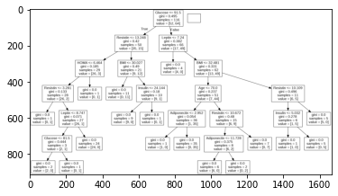

Metode KNN
#UTS
Lakukan analisa terhadap data pada https://archive.ics.uci.edu/ml/datasets/Breast+Cancer+Coimbra dengan menggunakan klasifikasi
metode KNN
metode pohon keputusan (Desision tree)
Proses analisa dilaporkan dan diupload di github ( menggunakan jupyter book)
import pandas as pd
import matplotlib.pyplot as plt
import seaborn as sns
from matplotlib.colors import ListedColormap
from sklearn import neighbors, datasets
dataset_url = "https://archive.ics.uci.edu/ml/machine-learning-databases/00451/dataR2.csv"
df = pd.read_csv(dataset_url)
df.head(10)
| Age | BMI | Glucose | Insulin | HOMA | Leptin | Adiponectin | Resistin | MCP.1 | Classification | |
|---|---|---|---|---|---|---|---|---|---|---|
| 0 | 48 | 23.500000 | 70 | 2.707 | 0.467409 | 8.8071 | 9.702400 | 7.99585 | 417.114 | 1 |
| 1 | 83 | 20.690495 | 92 | 3.115 | 0.706897 | 8.8438 | 5.429285 | 4.06405 | 468.786 | 1 |
| 2 | 82 | 23.124670 | 91 | 4.498 | 1.009651 | 17.9393 | 22.432040 | 9.27715 | 554.697 | 1 |
| 3 | 68 | 21.367521 | 77 | 3.226 | 0.612725 | 9.8827 | 7.169560 | 12.76600 | 928.220 | 1 |
| 4 | 86 | 21.111111 | 92 | 3.549 | 0.805386 | 6.6994 | 4.819240 | 10.57635 | 773.920 | 1 |
| 5 | 49 | 22.854458 | 92 | 3.226 | 0.732087 | 6.8317 | 13.679750 | 10.31760 | 530.410 | 1 |
| 6 | 89 | 22.700000 | 77 | 4.690 | 0.890787 | 6.9640 | 5.589865 | 12.93610 | 1256.083 | 1 |
| 7 | 76 | 23.800000 | 118 | 6.470 | 1.883201 | 4.3110 | 13.251320 | 5.10420 | 280.694 | 1 |
| 8 | 73 | 22.000000 | 97 | 3.350 | 0.801543 | 4.4700 | 10.358725 | 6.28445 | 136.855 | 1 |
| 9 | 75 | 23.000000 | 83 | 4.952 | 1.013839 | 17.1270 | 11.578990 | 7.09130 | 318.302 | 1 |
Metode KNN#
df.shape
(116, 10)
X = df.drop(columns=['8'])
X.head()
KeyErrorTraceback (most recent call last)
<ipython-input-5-d50f258d34a4> in <module>
----> 1 X = df.drop(columns=['8'])
2 X.head()
/usr/local/lib/python3.7/dist-packages/pandas/util/_decorators.py in wrapper(*args, **kwargs)
309 stacklevel=stacklevel,
310 )
--> 311 return func(*args, **kwargs)
312
313 return wrapper
/usr/local/lib/python3.7/dist-packages/pandas/core/frame.py in drop(self, labels, axis, index, columns, level, inplace, errors)
4911 level=level,
4912 inplace=inplace,
-> 4913 errors=errors,
4914 )
4915
/usr/local/lib/python3.7/dist-packages/pandas/core/generic.py in drop(self, labels, axis, index, columns, level, inplace, errors)
4148 for axis, labels in axes.items():
4149 if labels is not None:
-> 4150 obj = obj._drop_axis(labels, axis, level=level, errors=errors)
4151
4152 if inplace:
/usr/local/lib/python3.7/dist-packages/pandas/core/generic.py in _drop_axis(self, labels, axis, level, errors)
4183 new_axis = axis.drop(labels, level=level, errors=errors)
4184 else:
-> 4185 new_axis = axis.drop(labels, errors=errors)
4186 result = self.reindex(**{axis_name: new_axis})
4187
/usr/local/lib/python3.7/dist-packages/pandas/core/indexes/base.py in drop(self, labels, errors)
6015 if mask.any():
6016 if errors != "ignore":
-> 6017 raise KeyError(f"{labels[mask]} not found in axis")
6018 indexer = indexer[~mask]
6019 return self.delete(indexer)
KeyError: "['8'] not found in axis"
y = df['Classification'].values
y[0:5]
array([1, 1, 1, 1, 1])
from sklearn.model_selection import train_test_split
X_train, X_test, y_train, y_test = train_test_split(X, y, test_size=0.2, random_state=1, stratify=y)
from sklearn.neighbors import KNeighborsClassifier
knn = KNeighborsClassifier(n_neighbors = 3)
knn.fit(X_train,y_train)
KNeighborsClassifier(n_neighbors=3)
knn.predict(X_test)[0:5]
array([1, 2, 1, 2, 2])
knn.score(X_test, y_test)
0.3333333333333333
from sklearn.model_selection import cross_val_score
import numpy as np
knn_cv = KNeighborsClassifier(n_neighbors=3)
cv_scores = cross_val_score(knn_cv, X, y, cv=5)
print(cv_scores)
print('cv_scores mean:{}'.format(np.mean(cv_scores)))
[0.5 0.52173913 0.47826087 0.47826087 0.60869565]
cv_scores mean:0.5173913043478261
from sklearn.model_selection import GridSearchCV
knn2 = KNeighborsClassifier()
param_grid = {'n_neighbors': np.arange(1, 25)}
knn_gscv = GridSearchCV(knn2, param_grid, cv=5)
knn_gscv.fit(X, y)
GridSearchCV(cv=5, estimator=KNeighborsClassifier(),
param_grid={'n_neighbors': array([ 1, 2, 3, 4, 5, 6, 7, 8, 9, 10, 11, 12, 13, 14, 15, 16, 17,
18, 19, 20, 21, 22, 23, 24])})
knn_gscv.best_params_
{'n_neighbors': 23}
knn_gscv.best_score_
0.5688405797101449
#Metode pohon keputusan (Desision tree)
from sklearn import tree
import pydotplus
from sklearn.tree import DecisionTreeClassifier
import matplotlib.pyplot as plt
import matplotlib.image as pltimg
features = ['Age','BMI','Glucose','Insulin','HOMA','Leptin','Adiponectin','Resistin','MCP.1']
x = df[features]
y = df['Classification']
print(x,y)
Age BMI Glucose Insulin HOMA Leptin Adiponectin \
0 48 23.500000 70 2.707 0.467409 8.8071 9.702400
1 83 20.690495 92 3.115 0.706897 8.8438 5.429285
2 82 23.124670 91 4.498 1.009651 17.9393 22.432040
3 68 21.367521 77 3.226 0.612725 9.8827 7.169560
4 86 21.111111 92 3.549 0.805386 6.6994 4.819240
.. ... ... ... ... ... ... ...
111 45 26.850000 92 3.330 0.755688 54.6800 12.100000
112 62 26.840000 100 4.530 1.117400 12.4500 21.420000
113 65 32.050000 97 5.730 1.370998 61.4800 22.540000
114 72 25.590000 82 2.820 0.570392 24.9600 33.750000
115 86 27.180000 138 19.910 6.777364 90.2800 14.110000
Resistin MCP.1
0 7.99585 417.114
1 4.06405 468.786
2 9.27715 554.697
3 12.76600 928.220
4 10.57635 773.920
.. ... ...
111 10.96000 268.230
112 7.32000 330.160
113 10.33000 314.050
114 3.27000 392.460
115 4.35000 90.090
[116 rows x 9 columns] 0 1
1 1
2 1
3 1
4 1
..
111 2
112 2
113 2
114 2
115 2
Name: Classification, Length: 116, dtype: int64
dtree = DecisionTreeClassifier()
dtree = dtree.fit(X, y)
data = tree.export_graphviz(dtree, out_file=None, feature_names=features)
graph = pydotplus.graph_from_dot_data(data)
graph.write_png('mydecisiontree.png')
img=pltimg.imread('mydecisiontree.png')
imgplot = plt.imshow(img)
plt.show()
